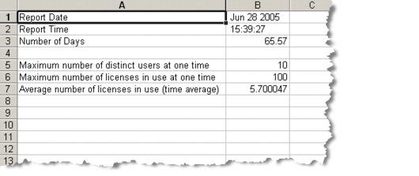

Licensing > License Server Reporting > Obtaining License Server Statistics
License Server Reporting
The license server can track license usage statistics and produce statistical reports upon request. When tracking is enabled on the license server, you can generate reports from the license manager console, using two commands, from any client. Either command lets you specify a number of days on which to report.
The report displays on the screen, and a time-stamped .csv copy of the file is placed in the local
<user_home>\op_admin\tmpdirectory.Enable License Tracking
Use one of the following procedures, depending on your platform, to enable license tracking.
Procedure 3-13 Enable License Tracking (Windows)
- Navigate to Windows Services.
- Right-click on the OPNET License Server service, and select Properties.
- Click the Stop button on the General tab under Service Status.
- Type
-license_usage_tracking_enable [-license_usage_tracking_history_days <number of days>]in the start parameters box.Note—If you do not use the
-license_usage_tracking_history_days <number of days>parameter, tracking is automatically enabled for a 30 day history.- Click the Start button, and click OK to exit Properties.
Note—If you stop and restart the License Server from the License Manager, tracking is disabled.
End of Procedure 3-13
Procedure 3-14 Enable License Tracking (Solaris or Linux)
- Modify the auto-boot scripts as described in Procedure 3-9 to include "-license_usage_tracking_enable". The entire command will appear as follows:
<bindir>/op_license_server -license_port <port_name> -license_usage_tracking_enableTracking information is retained for 30 days, by default. To modify this period, append the following when using the command shown above:
- Save the changes to the auto-boot script.
- Stop the license server, using Procedure 3-10 or Procedure 3-12.
- Run the auto-boot script to restart the license server with the new changes.
End of Procedure 3-14
Obtaining License Server Statistics
Once license tracking is enabled, you can generate statistical reports about license usage. Use one of the following procedures, depending on your platform, to generate a report.
License Server Usage Reports
A license server usage report provides license file statistics, including license ID (license number, contract number and program name), total time in use, average checkout time, number of checkouts, number of unique users who accessed the file, and user IDs of those who accessed the file.
Procedure 3-15 Generate License Usage Reports per Server (Windows)
- Choose Start > Programs > OPNET SP Guru Transport Planner 12.0 > OPNET Console 12.0, to open a console window.
Note—You can generate the reports from any client machine that has access to the license server.
- Type
op_license_util -license_server<license_server_name>.A license server prompt displays.
- Type
fldb_statsto print a usage report for the license server.- Enter the number of days for which you wish to report.
- Obtain a .csv copy of the report from the local
<user_home>\op_admin\tmpdirectory.Note—The naming convention of the file is
license_usage_report_MM-DD-YYYY_HH:MM:SS.End of Procedure 3-15
Procedure 3-16 Generate License Usage Reports per Server (Solaris or Linux)
- Open a shell.
Note—You can generate the reports from any client machine that has access to the license server.
- Type
op_license_util -license_server<license_server_name>.A license server prompt displays.
- Type
fldb_statsto print a usage report for the license server.- Enter the number of days for which you wish to report.
- Obtain a .csv copy of the report from your
<user_home>/op_admin/tmpdirectory.Note—The naming convention of the file is
license_usage_report_MM-DD-YYYY_HH:MM:SS.End of Procedure 3-16
License File Usage Reports
A license file usage report provides license server statistics, including maximum number of concurrent users, maximum number of concurrent licenses in use, and average number of concurrent licenses in use. Figure 3-10 shows an example of the .csv file that is produced.
Figure 3-10 License File Usage Report

Procedure 3-17 Generate License Usage Reports per License File (Windows)
- Choose Start > Programs > OPNET SP Guru Transport Planner 12.0 > OPNET Console 12.0, to open a console window.
Note—You can generate the reports from any client machine that has access to the license server.
- Type
op_license_util -license_server<license_server_name>.A license server prompt displays.
- Type
license_statsto print a usage report for the license server.The report displays and scrolls on the screen.
- Enter the number of days for which you wish to report.
- Obtain a .csv copy of the report from your
\op_admin\tmpdirectory.Note—The naming convention of the file is
license_file_usage_report_MM-DD-YYYY_HH:MM:SS.End of Procedure 3-17
Procedure 3-18 Generate License Usage Reports per License File (Solaris or Linux)
- Open a shell.
Note—You can generate the reports from any client machine that has access to the license server.
- Type
op_license_util -license_server<license_server_name>.A license server prompt displays.
- Type
license_statsto print a usage report for the license server.The report displays and scrolls on the screen.
- Enter the number of days for which you wish to report.
- Obtain a .csv copy of the report from your
<user_home>/op_admin/tmpdirectory.Note—The naming convention of the file is
license_file_usage_report_MM-DD-YYYY_HH:MM:SS.End of Procedure 3-18
| Home © 1987-2007 OPNET Technologies, Inc. All Rights Reserved. This software may be covered by one or more U.S. Patents. See complete patent notice in the Legal Notices section. OPNET Support Center |